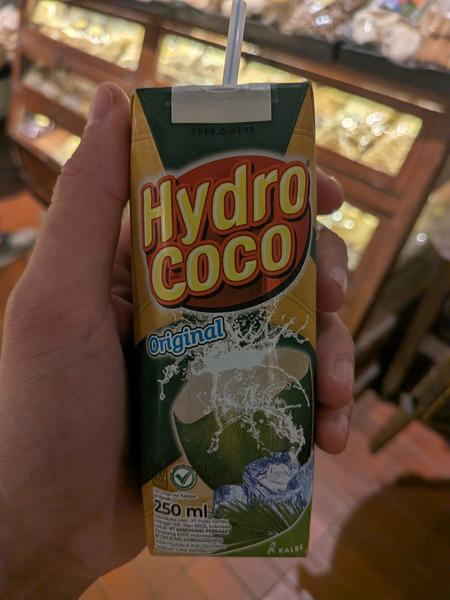

September 2026 · 8.5 fl oz (250 mL) · Still · Pasteurized · Added Sugar · Not Organic
Ranked 28th of 35 coconut waters I have scored · below Cocochito w/ Pulp (4.1) · above El Mexicano w/ Pulp (3.9). See the full ranking.
Visiting Indonesia and all the real coconut water is fresh. Generally if you can drink from a fresh coconut, do that. But this is their shelf stable substitute.
Super sweet, not much depth. But pleasant. Something you might feed to a hummingbird or small child. Doesn't taste burnt or acrid but doesn't taste fresh at all.
These coconuts are grown in habitats threatened by palm oil deforestation. If you find this site useful, consider donating to the Rainforest Action Network.